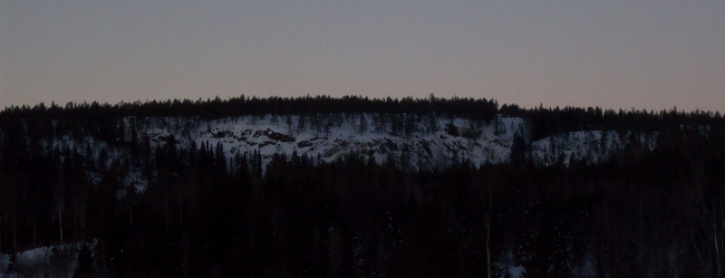

Hammrebodarna är beläget på Vätabergets östsida ca 20km söder om Sundsvall.
För aktuellt isläge/övriga frågor kontakta
.
<div style="width: 355; float: right; margin-left: 10px; padding: 3px; border: solid 1px #cccccc;"> <googlemap lat="62.28206" lon="17.18249" zoom="11" type="map"> 62.28206,17.18249,Hammrebodarna </googlemap> </div>
Åk till Njurundabommen 20km söder om Sundsvall efter E4. Ta av vägen mot Ängom, följ vägen 3.4km och sväng höger mot Sörfors. Kör ytterligare 7km innan du tar höger mot Hammrebodarna. Kör 1km tills du kommer till en T-korsning där du tar vänster. Tänk på hur du parkerar så du inte stör de som bor där!
Anmarschen tar ca ??min beroend på snöläget. Följ berget ut åt vänster (söderut) så kommer ni se isarna.
Ett antal isfall i varierad längd och tjocklek. Finns även ett överhäng med boulderisar.
Inga accessproblem föreligger för tillfället, men när ni parkerar se till att inte hindra ev. passerade trafik.
Kategori:Medelpad
Copyright (C) Permission is granted to copy, distribute and/or modify this document under the terms of the GNU Free Documentation License, Version 1.3